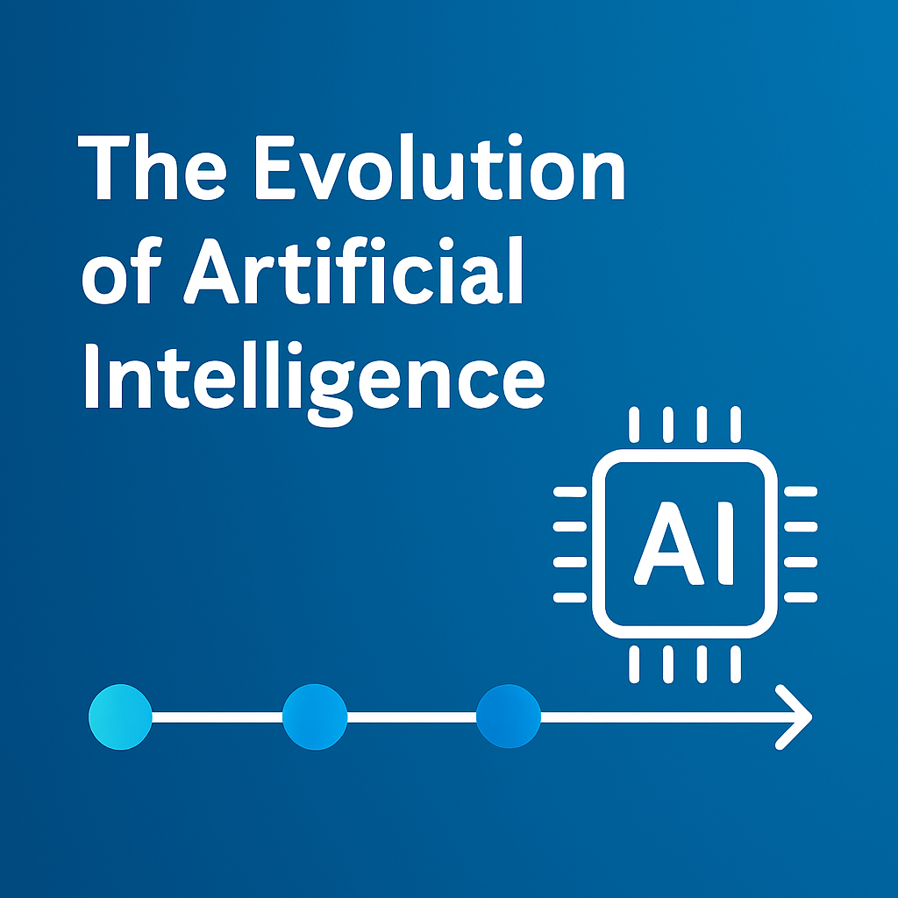
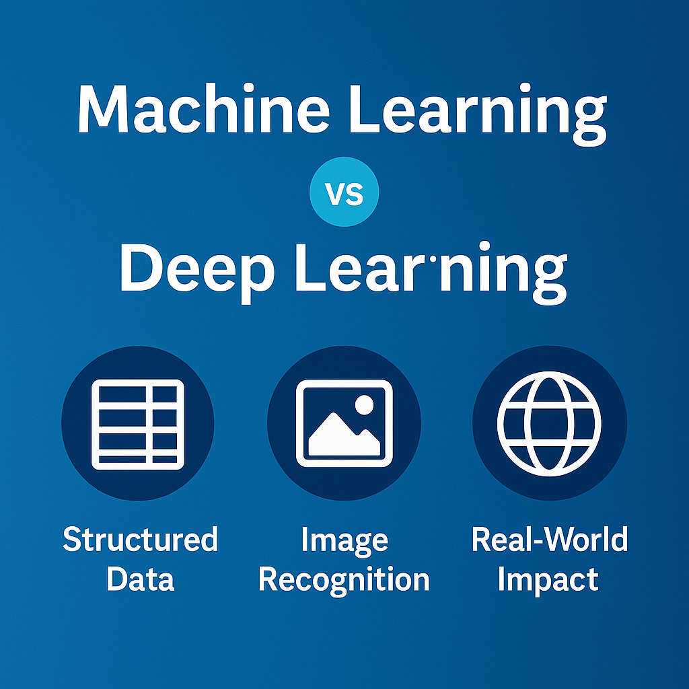
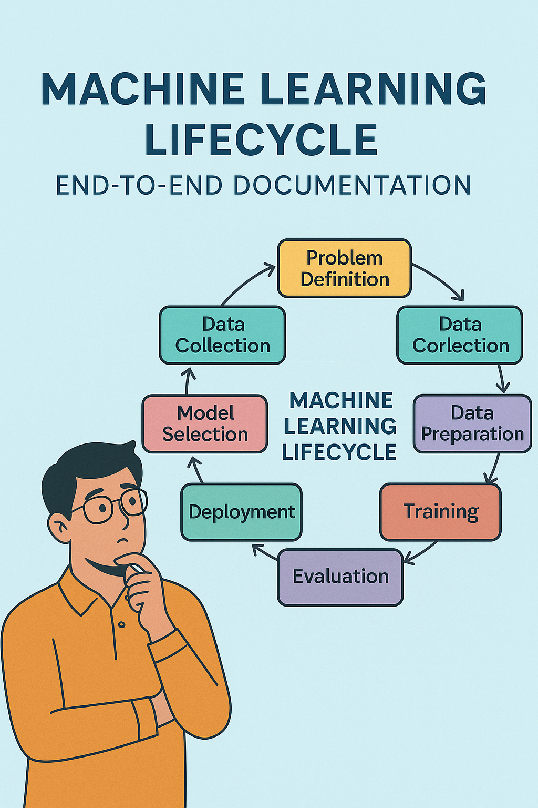
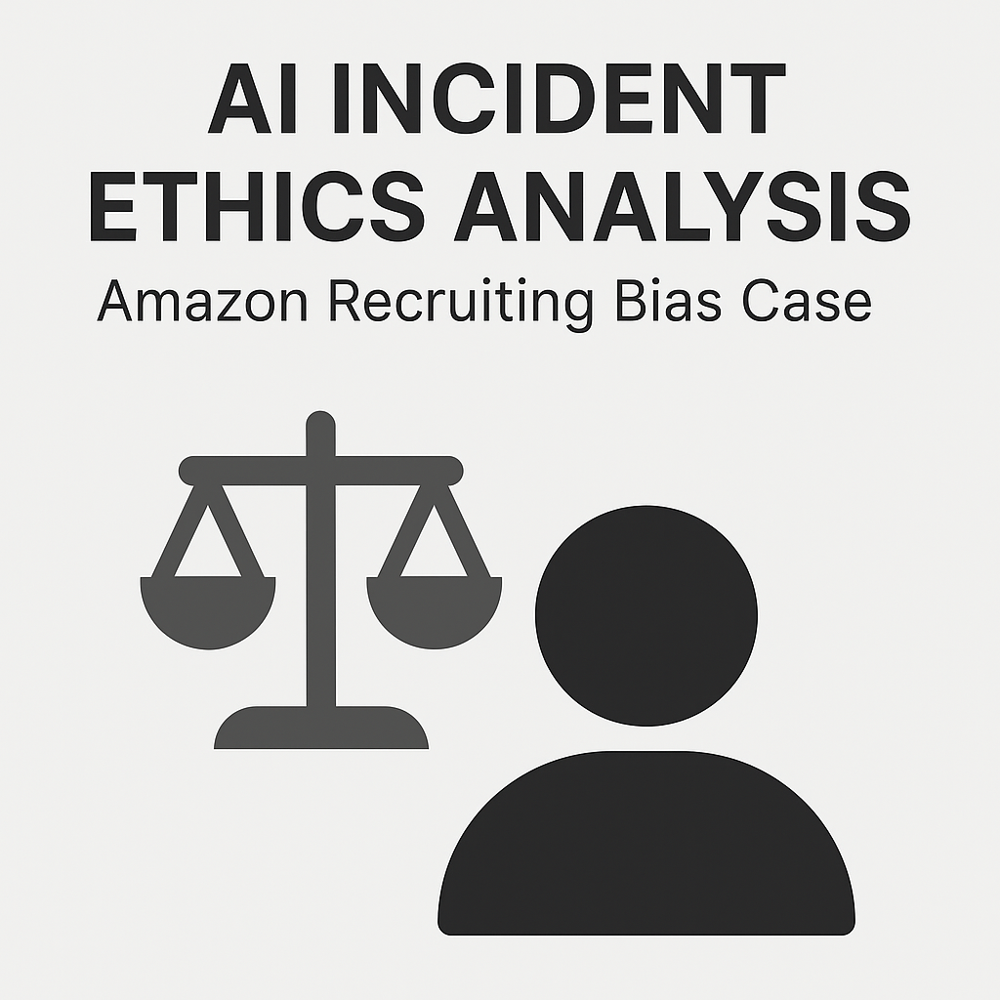

Exploring intelligent systems, machine learning workflows, and data-driven problem solving.
I am passionate about understanding how Artificial Intelligence and Machine Learning can be used to create meaningful solutions. My work focuses on connecting theory with real-world applications through hands-on projects, technical research, and system design.

A visual walkthrough of major milestones in AI—from foundational concepts like the Turing Test, to modern advancements such as deep learning, cloud-native AI, and generative models.
📊 View AI Timeline (PowerPoint)
A comparative research report analyzing the structural, performance, and real-world differences between classical Machine Learning models and Deep Learning systems. Highlights use cases where each approach excels.
📄 View Full Report
A complete overview of the ML lifecycle covering problem definition, data collection, preparation, model selection, training, evaluation, deployment, and monitoring. This document demonstrates a structured, practical, and ethical approach to building production-ready ML systems.
📄 View Full DocumentationA technical article presenting three core ML competencies: handling missing data, managing imbalanced datasets, and detecting/mitigating data and concept drift in real-time systems. This artifact demonstrates applied problem-solving skills, production-level reasoning, and responsible ML practices.
📄 View Full Article
An analytical report examining the ethical issues behind Amazon’s biased AI recruiting tool. This artifact highlights three key ethical concerns—training data bias, lack of transparency, and inadequate oversight—while demonstrating critical thinking, responsible AI evaluation, and an understanding of AI governance. It reflects my ability to assess real-world AI failures and propose practical mitigation strategies.
📄 View Full Analysis